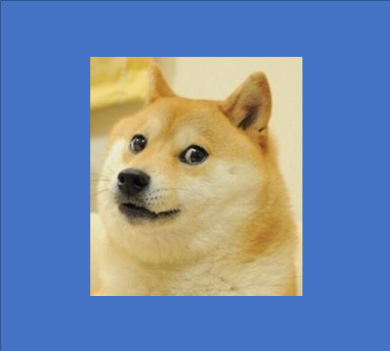
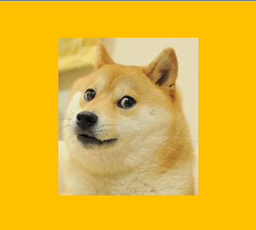
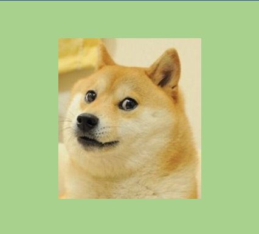
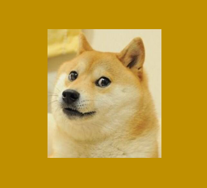
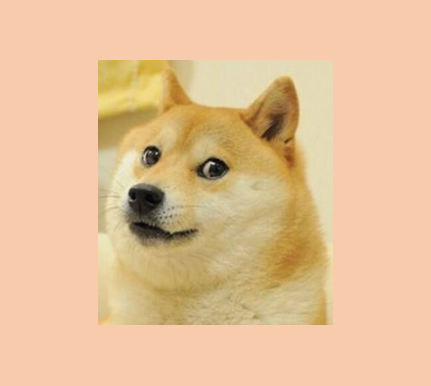
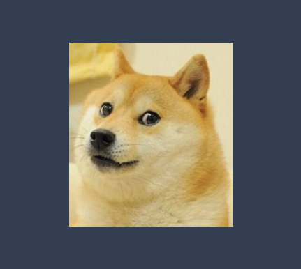

The Berry Picker Tracker
Berry Picker Tracker app is designed to help you find your way while berry picking or mushrooming. Just start tracking and enjoy the outdoors to the fullest without having to worry about getting lost. Click here for Berry Picker Tracker repo.
The Team
Berry Picker Tracker was created by six Helsinki University CS students as a course project during fall 2022.
     Contact
Contact Us by email ...